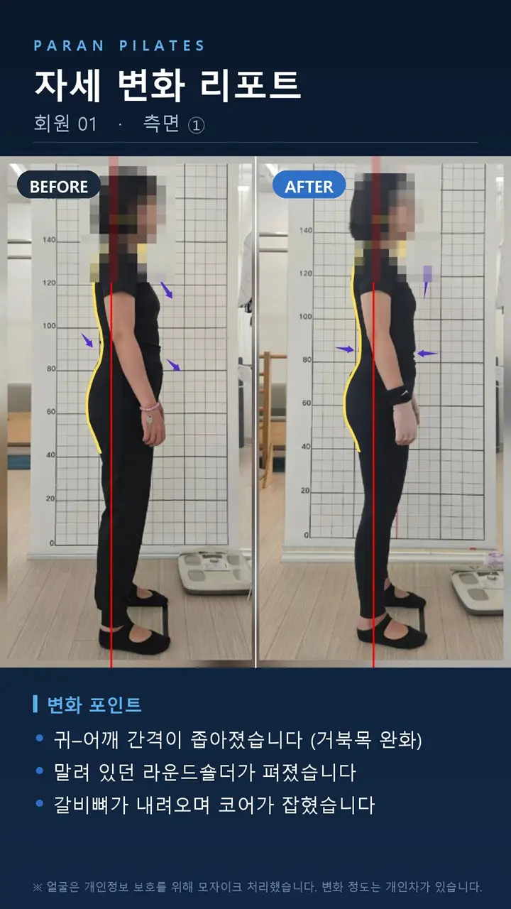
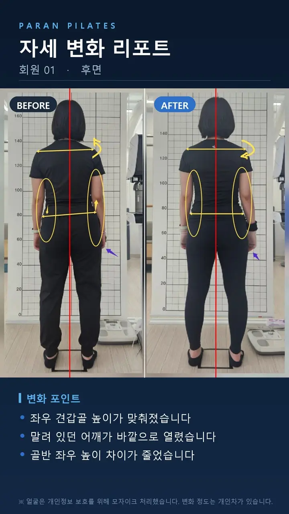
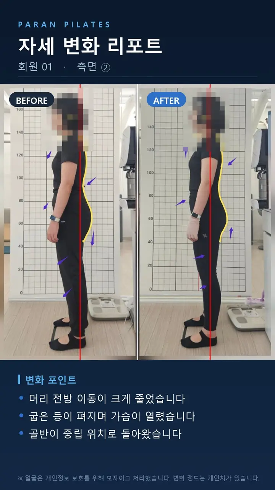

- 어깨 높이 좌우 차이가 줄었습니다
- 밀려 있던 골반이 중앙으로 왔습니다
- 허리 라인 좌우 대칭이 좋아졌습니다

- 귀–어깨 간격이 좁아졌습니다 (거북목 완화)
- 말려 있던 라운드숄더가 펴졌습니다
- 갈비뼈가 내려오며 코어가 잡혔습니다

- 좌우 견갑골 높이가 맞춰졌습니다
- 말려 있던 어깨가 바깥으로 열렸습니다
- 골반 좌우 높이 차이가 줄었습니다

- 머리 전방 이동이 크게 줄었습니다
- 굽은 등이 펴지며 가슴이 열렸습니다
- 골반이 중립 위치로 돌아왔습니다
- 기록 방식
- 수업 시작 시점과 이후의 자세를 같은 자리, 같은 조건에서 촬영해 비교했습니다. 정면·측면·후면 네 방향을 모두 기록합니다.
- 안내
- 회원님 동의를 받아 게시하며, 개인정보 보호를 위해 얼굴은 모자이크 처리했습니다. 변화의 정도는 개인차가 있습니다.